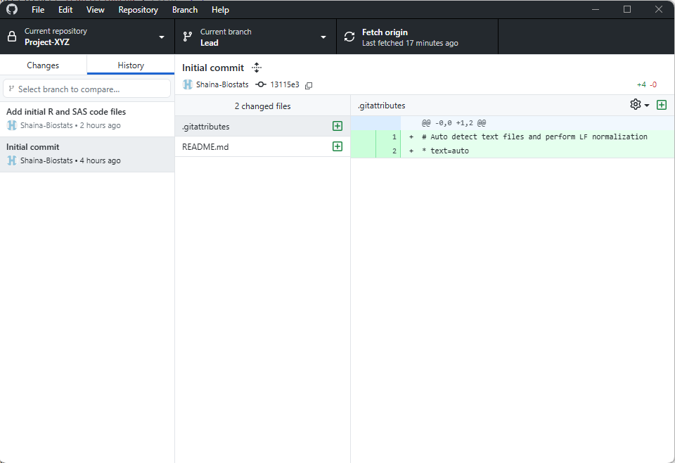
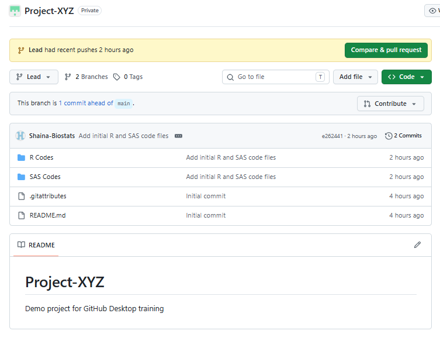
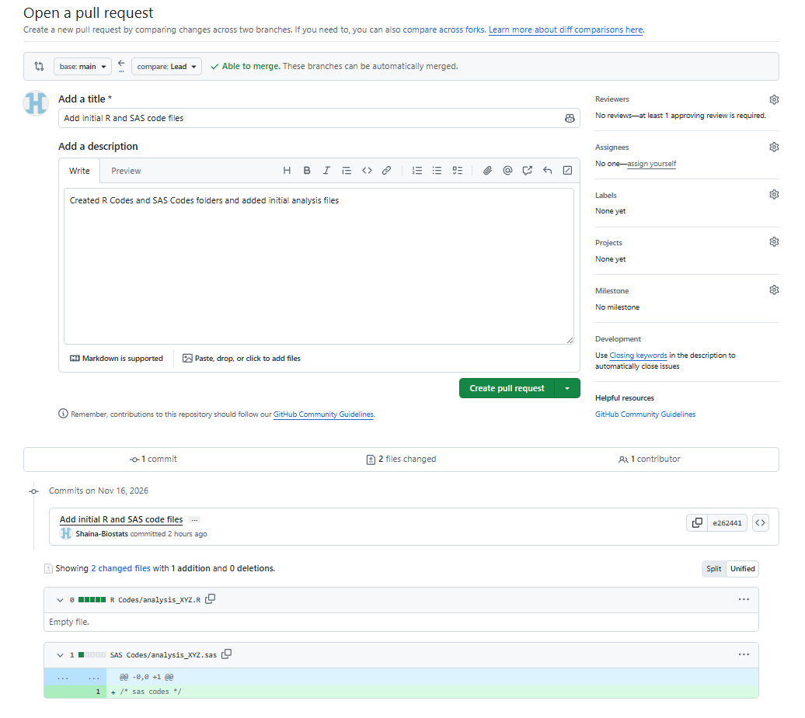
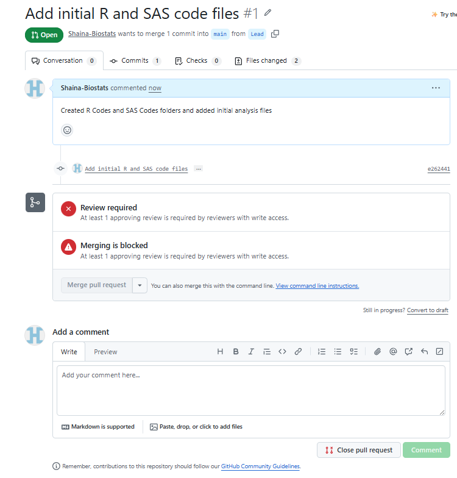
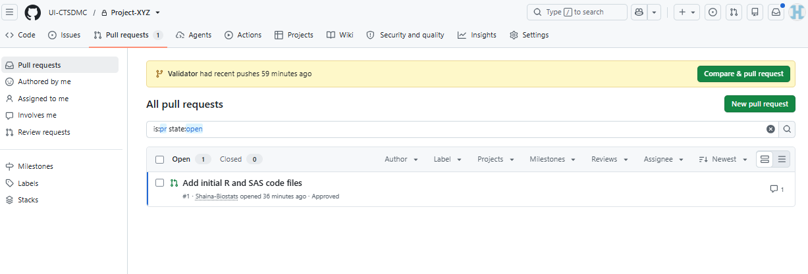
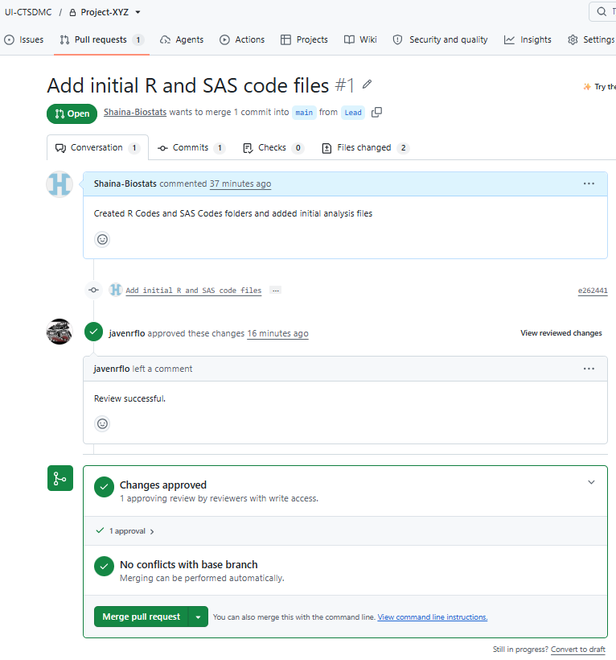
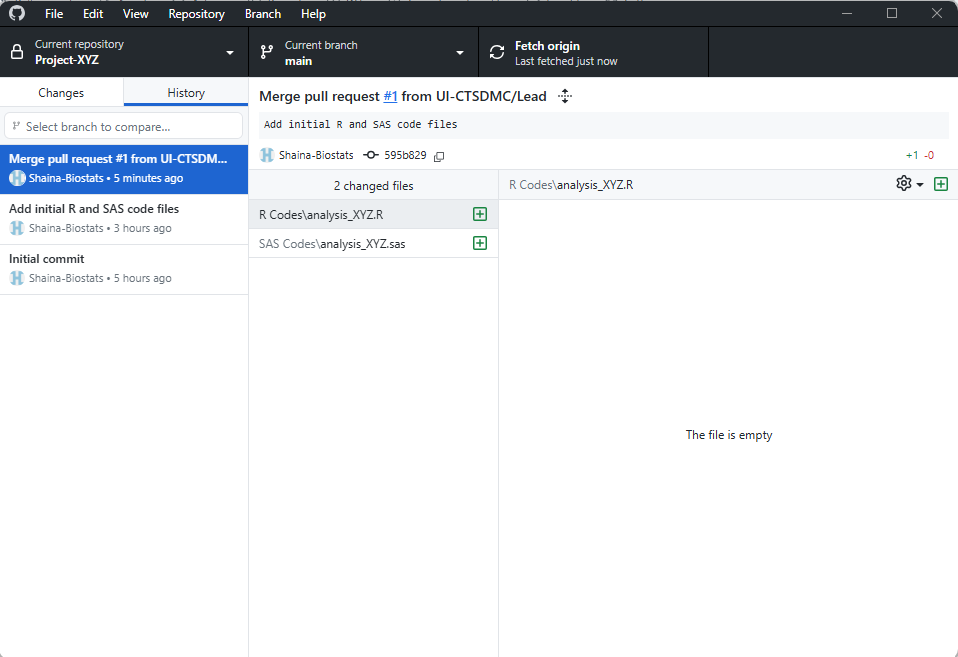

Review and Merge to Main
Review validated changes, obtain approval, and merge approved work into main.
Complete Independent Validation
Before merging changes into main, confirm that the Lead and Validator have completed their independent work and compared the required results or outputs.
Any discrepancies should be investigated and resolved. The final version of the Lead's code should reflect the validated work intended for the main branch.
Preserve Validation Records
Ensure that required validation documentation, comparison results, and approval records are preserved according to project requirements. These records do not need to be stored in GitHub unless specifically approved for version control.
Identify Files to Merge
Determine which validated files and changes from the Lead branch are approved for inclusion in main.
If all changes on the Lead branch are approved, the branch can be used directly for a pull request. If only selected files or changes are approved, prepare a separate branch containing only those approved changes before creating the pull request.
Review the Proposed Changes
In GitHub Desktop, select the appropriate working branch, confirm that all intended changes have been committed, and click Push Origin if any commits have not yet been uploaded to GitHub.

Confirm all changes are accurate and pushed to GitHubOpen a Pull Request
Open the project repository on the GitHub website. Navigate to Pull requests.

Open a new pull request on GitHubReview and Submit
Set base to main and compare to the branch containing the approved Lead changes.
Review the proposed file changes to confirm that the pull request contains only the intended work.
Enter a clear title and description summarizing the validated work, then select Create pull request.

Review the changes and create the pull request
Merging to main is pending reviewe's approvalRequest Review
Once the pull request has been created, notify the designated reviewer and provide the pull request link. The reviewer must have the appropriate repository permissions to provide a qualifying approval.
Review the Proposed Changes
The designated reviewer opens the pull request on GitHub and examines the proposed changes under Files changed.
The reviewer may leave comments or request changes if corrections are needed. The Lead should address any required changes before the pull request is approved.
Approve the Pull Request
Once the review is satisfactory, an eligible reviewer selects Review changes → Approve → Submit review. Obtain the number of approvals required by the project's branch protection rules.
Merge the Approved Pull Request
After all required approvals and checks are complete, an authorized team member opens the approved pull request and selects the permitted merge option, such as Merge pull request.
Review the confirmation and select Confirm merge. The approved changes are then incorporated into main.

Review the changes and create the pull request
Successful merge to main branchVerify the Changes on Main
Open the repository's Code tab on GitHub and select the main branch. Confirm that the approved files and changes are present. You can also review the commit history to verify that the merge was recorded.

Verify that changes are merged to mainBranch Retention and Records
After merging, retain or delete the working branches according to project requirements. Preserve required validation evidence and approval documentation before deleting any branches.